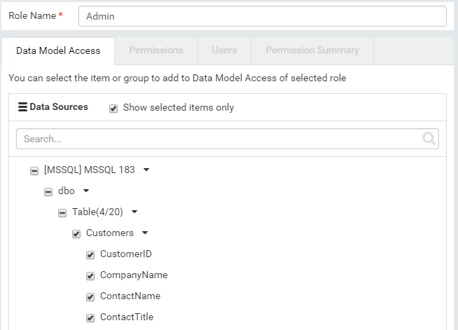

Role Setup¶
The Role Setup page allows user to manage roles.
List and View Roles¶
- In browser, log in to Izenda as a user with Role Setup permissions.
- Click Settings, then Role Setup in the left menu.
- Select the Setting Level: either System or a specific tenant.
- List of roles and statuses will be displayed in the Middle Panel.
- Click any role in the list.
- The role’s information will be displayed in the 4 tabs Data Model Access, Permissions, Users, and Permission Summary.
{kind=link}
Fig. 112 Role Setup List and Details
Search for Roles¶
The Search box at the top allows searching for specific roles.
-
Type a partial name and click the search icon (üîç).
Only matching roles will be displayed in the list.
Clear the search box to see the full list.
{kind=link}
Add Role¶
Click the + Add Role button at the top.
Enter a unique name for the role.
- 
Fig. 114 Data Model Access
In Data Model Access tab, tick items in Available Data Sources then click the > icon to move to Visible Data Sources.
It is possible to move only some fields of a table to Visible list. In this case, users of the role will only see visible fields in the table.
In Permissions tab, configure permissions for this role similarly to Tenant Permissions.
-
In Users tab, tick users in Available Users then click the > icon to move to Assigned Users.
Assigning users is not available when Izenda is integrated inside an existing system.
The Permission Summary tab is a read-only comparison of permissions among all roles of the current tenant.
For example: a quick scan through this page ensures that mod002 role consists of User and Role setup permissions only while mod001 role consists of Data Model, Report and Dashboard permissions only.
Click the Save button at the top.
The new role will appear in the list in Middle Panel.
Click the Activate link next to the role in Middle Panel to make it active.
{kind=link}
{kind=link}
{kind=link}
Edit Role¶
- Click the role in the list in Middle Panel.
- The role’s information is displayed in the 4 tabs.
- Edit the information.
- Click the Save button at the top, then OK in the confirmation pop-up.
Deactivate Role¶
- Untick the Active checkbox (☑) of the role in Middle Panel.
- Click OK in the confirmation pop-up.
- The role becomes inactive. Its users no longer have the permissions specified in this role.
Note
The Cancel button at the top will have no effect in this case.
Delete Role¶
- Click the Delete icon (x) of each role.
- Click OK in the confirmation pop-up.
- The role is deleted and removed from the list in Middle Panel.
Note
The Cancel button at the top will have no effect in this case.